Finding consistent partners is harder than playing the actual sport.
Back home in Raleigh, I had a rotation of friends I played tennis with every week. Then I moved to Boone for school and had to start from scratch. Group chats and open play were hit or miss, and people flaked last minute. Rally started as a fix for my own problem. The design challenge? Find reliable partners while building community around the sport.
50M+
Americans play tennis or pickleball, and both are still growing fast.
USTA, SFIA
70%
less time with friends in person for people 15 to 24, compared to 20 years ago.
U.S. Surgeon General, 2023
Research · survey of 25 people
76%
would play more with a partner at a similar skill level.
56%
said phone or student verification would build trust.
20%
would consider paying for a premium tier.
Personas
A
Persona 1
Andy
Age
22
Location
Boone, NC
Occupation
Student
Sociability
Introvert
About
A computer science major in Boone who grew up playing tennis but hasn’t played consistently in college. He values team sports, and finding people at his level is the hard part.
Motivations
Tennis partner to play with
Tennis tournament sign-up
Physical well-being
Playing with friends and family back home
Pain points
Finding tennis or pickleball players at his level
Finding partners who play consistently
Doesn’t usually use apps to find friends
Goals
Keep playing a sport he loves
More cardio
Get better at doubles
Shake the rust off by playing consistently
User journey
Discovery
Finds the app, fills out a profile and sets goals.
Exploration
Browses nearby courts and players with his filters.
Tennis match
Matches with a partner and schedules a game.
Community
Part of a tennis group with goals and challenges.
L
Persona 2
Luis
Age
33
Location
Austin, TX
Occupation
Product management
Sociability
Extrovert
About
A senior project manager in Austin who ran track and cross country, kept running through college and work, and finished an Ironman and a marathon. He loves intuitive apps that help him hit his goals.
Motivations
Running group to train with
Half marathon sign-up
Remote accountability partners
Physical well-being
Pain points
Returning knee injury
Pavement versus gravel trails
Finding groups at a similar pace
Finding trails after moving to a new city
Goals
Run a half marathon
Build healthy cardio habits
Find a running group for accountability
Get back into running without getting hurt
User journey
Discovery
Finds the app, builds a profile and sets goals.
Exploration
Browses nearby trails with his filters.
Running match
Joins a group or partner and schedules a run.
Community
Part of a running group with goals and challenges.
How the data changed the challenge
From a sports app for everything, to two sports done right.
Soccer
Tennis
Basketball
Running
Pickleball
Golf
Cycling
Rock climbing
Court finder
Trail finder
Leaderboards
Rentals
Calendar
Auto-matching
Before research
Eight sports, court and trail finders, leaderboards, rentals. Ten-plus features, sorted into must, should, and could have. The focus was on finding places to play.
After research
Tennis and pickleball, which share courts and players. More about people: skill level, verification, profiles, show-up records. Five must-have features.
My process
As with all my projects, I started brainstorming with pen on paper.
It started as a running app. The first idea used competition to keep runners motivated. Pretty quickly I wanted it to open up to other sports, like pickup soccer, pickleball and tennis.
Who it’s for. I sketched persona layouts and wrote down the real problem: it’s hard to find people to play with consistently. Flagging no-shows was in the notes from the start.
Naming it. SportsConnect, Ping and Rally were all on the list. Rally stuck, and the logo sketches started with an R and a ball.
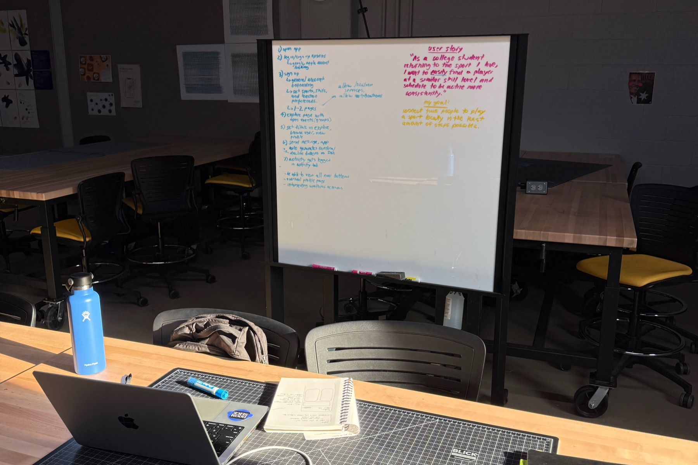
The whiteboard was my best friend. Being able to work big, iterate quickly, and jot ideas down in a tactile form throughout my process helped me build out the real purpose of my product.
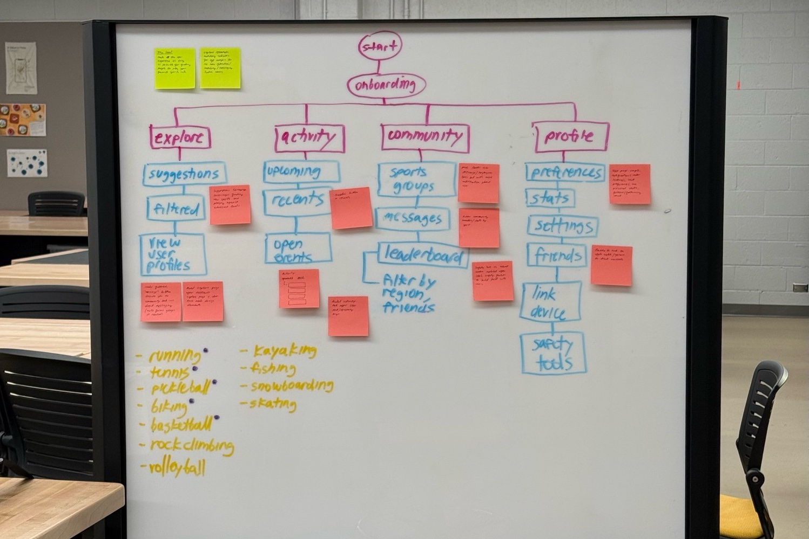
The first site map. At that stage, the most organic way to get feedback was to present the site map and walk through each section. Notes and suggested changes went on sticky notes, placed right in the section they were about.
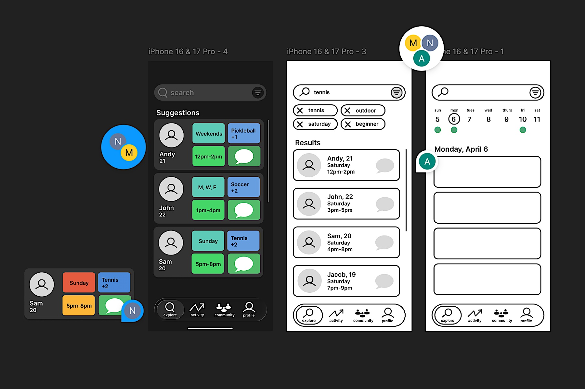
First drafts in Figma. The early screens matched you with people, with colour-coded tags for days, sports and times. Classmates left comments right on the frames, and the final app shifted to open matches you can scan at a glance.
How Rally works
Post. Request. Chat. Play.
01
Browse
Open matches near you, sorted by time. Sport, format, level, court and spots left, all on the card.
02
Request
Tap request. The host sees who’s asking before saying yes.
03
You’re on
When the host approves, the ball hops and the match is set.
04
Chat
Plan it in Rally. No phone numbers shared.
05
Played
After the match, both players confirm it happened. Two people actually playing is the whole point.
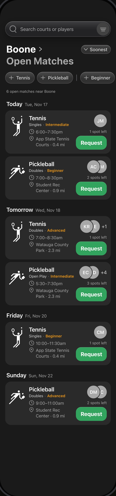
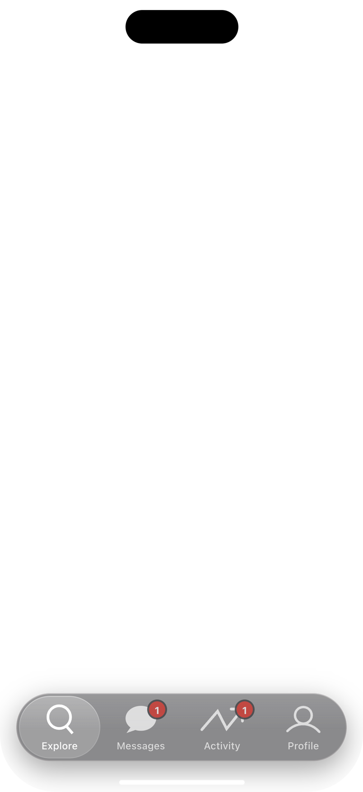
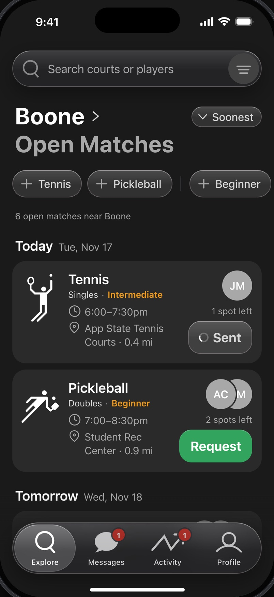
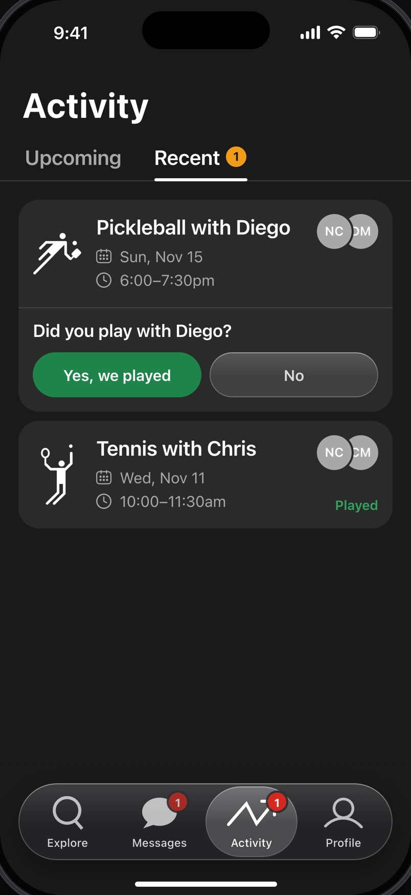
Design decisions
An app to encourage off‑screen connection.
I wanted the fewest possible steps between setting up your profile and standing on the court. That meant an interface you don’t have to think about, and features built around the player. To check that, I ran a blind critique: classmates used the live prototype with no walkthrough from me, while I took notes on how they moved through it and where they got stuck. Those notes shaped the decisions below.
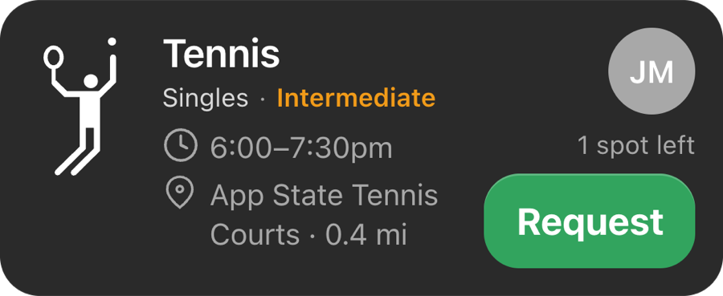
Skill level, up front. Every card shows the level right under the sport, because nobody wants an uneven game.
Trust before you meet. Phone verification and a show-up rate on every profile. In testing, a few people wanted to see who they’d be playing with right away, so tapping a name or profile picture now goes straight to that person’s profile.
Browse, don’t get matched. No black-box algorithm. Filter by sport and level, pick the game you want, and the host picks the players.
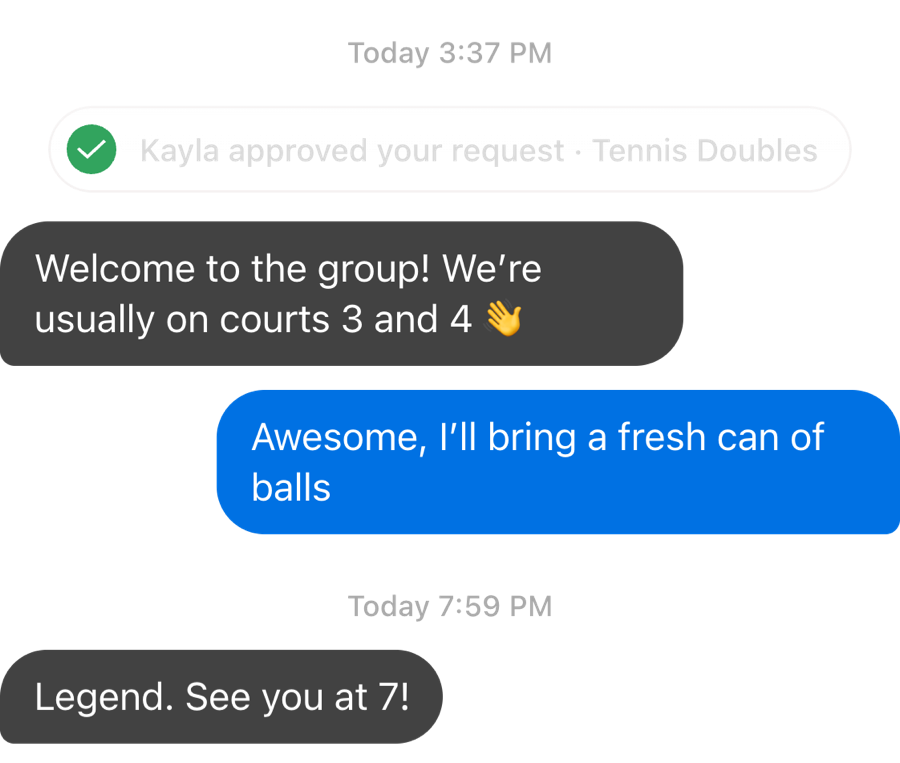
Chat stays in Rally. Plan the match without handing out your number.
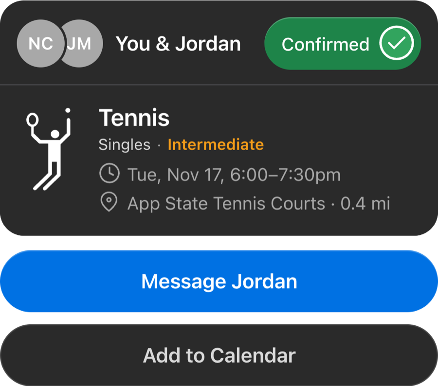
Straight to your calendar. Once you’re confirmed, one tap adds the match to your calendar, court and time included.
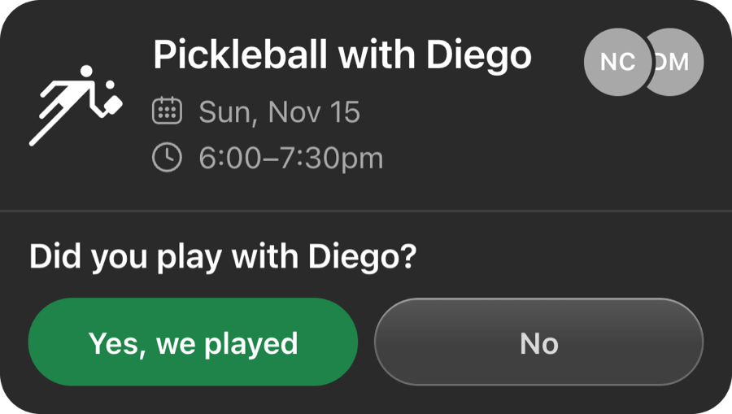
Measure what matters. Success is two people who actually played, not downloads.
The business side
How would Rally hold up as a business? I did the research.
Before building more, I looked at Rally the way an investor would: the trends around it, how it would make money, and how tough the market is.
How it would work Business model canvas
Key partners
City parks departments (they control public courts), App State UREC and club sports
Key activities
Build and improve the app, grow the community, keep users safe: an 18+ rule, a waiver, report and block
Key resources
The app and its design, the player network, player data
Value proposition
Find a partner at your skill level. Reliable people (SMS verification, show-up record), since meeting strangers can feel risky. Make friends through sports.
Customer relationships
Self-service, community and repeat partners, report and block support
Channels
Campus marketing, word of mouth, Instagram and TikTok
Customer segments
College students, young professionals, returning players
Cost structure
Hosting (a web app keeps it cheap), SMS verification, marketing and events
Revenue streams
A premium tier, plus “buy me a coffee” support
How tough the market is Porter’s Five Forces
Competitor rivalry
High
Lots of free apps doing similar things.
Threat of new entrants
High
One person with AI tools could build this.
Buyer power
High
Switching is free, and most people won’t pay.
Supplier power
Low to moderate
Hosting is cheap, and AI tools help.
Threat of substitutes
High
Group chats, open play and rec leagues are free.
Where it landed
Overall: moderately unattractive. The demand is there with the player count, but four of the five forces are high.
Lessons
The hardest part is getting enough people on the app. Free is the baseline, and group chats are the real competitor.
Pivot
Start narrow, one campus at a time, beginning with App State, where I needed it in the first place. Lead with safety and trust, partner with local communities, and measure matches played, not downloads.